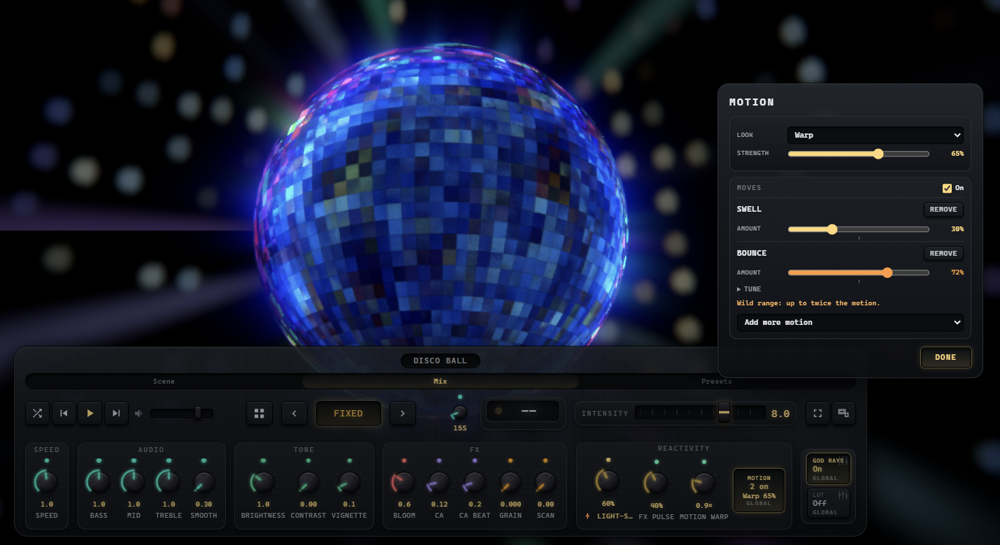

Motion on the beat
IKANDY moves every visual with your music. One Motion window holds all of it: the Look every scene gets, and your moves on the beat. It works the same way on every kind of visual, from the built-in worlds to MilkDrop presets and the shaders you import. No move ever shows past the edge of the picture, and Intensity 0 stops all of it.

Open the Motion window
- Open the DJ Console and find the Reactivity panel. MOTION sits beside the Light-Sync, FX Pulse and Motion Warp knobs and shows what is on: your moves (a name like Swell, a count like 2 on, or Off) and your Look (like Warp 65%). It lights up while either is on.
- Click MOTION, or Tab to it and press Enter. The window opens at the right edge of the screen, so you can watch the picture while you tune it.
- The Look is at the top and your moves are below it. Every change applies right away and carries to every scene. Press Done or Escape, or click outside the window, to close it.
- Below your moves, Console knobs holds Reset console settings, which puts every console knob back to IKANDY’s defaults. It asks first.
The Motion window is Pro and Studio. On Free the MOTION button is locked, and Swell and Drift play on their own; Setup, COMFORT, Motion moves turns them off and back on.
The Look
The musical treatment every scene gets. Pick one and set its Strength, from a whisper to the full effect; it starts at 65 percent.
Pictures, videos and games have no Look, and the window says so.
Bass, Mid and Treble: color knobs
The three Audio knobs add color from each part of the music, on every scene, with or without a Look: MilkDrop, WarpField and HDR pictures included. They add color and never change how a scene moves.
0 turns that color off, 1 is the gentle default and 2 is the full effect. A color knob reads alike on dark and light scenes and never turns a color into red. The color knobs are Pro; on the Free plan every scene plays with them at their gentle default, and Intensity is the knob you turn. The moves follow the beat itself, so these knobs never stop them.
The five moves
Each move has one Amount. Up to 50 percent is the standard range; above it is the wild range, up to twice as much.
Swell and Bounce look for a subject, such as a fractal, a disco ball or a logo, and move only that part while the rest of the frame holds still. On a scene with no centre object, Swell gives the whole picture a small push that springs straight back. MilkDrop presets and WarpField scenes move themselves, so Swell leaves them still; Bounce pulses a full-screen picture as a whole instead.
Add, stack, tune and remove
- Choose Add motion below your moves (it reads Add more motion once a move is on). Hover a move’s name to see what it does.
- You can stack all five. Moves that move the same thing share one budget, so stacking changes the character of the motion rather than piling it higher. Speaker keeps its own.
- Up to 50 percent, the tick on the Amount track, is the standard range. Above it is the wild range: up to twice as much motion, with an orange readout and a note, because it can be too much for some people. It is never a default.
- Open Tune under Bounce for Squash (how much it flattens on the beat), Hop (how high it jumps on the rebound) and Focus (Auto finds the subject, Centre object always moves the middle, Whole screen pulses the full frame).
- Remove takes a move out. The On switch at the top of the moves turns them all off and back on without losing your settings.
On the beat
- Motion follows the beat IKANDY predicts, so each hit lands on the music instead of chasing it. A build gathers, and a drop lands big.
- On slow songs, where a bar long rhythm could sway the whole picture, Motion holds itself back.
- Wireless headphones or a TV that plays the sound late? Open Setup, AUDIO, Picture timing and slide the picture later until the dot pulses with the beat you hear, or tap along and IKANDY sets it for you.
Turning it down or off
- The On switch in the Motion window turns the moves off and keeps your settings.
- Intensity 0 stops all of it: every move, and the Look’s reaction to the music.
- Comfort mode turns every move off while it is on, and turning it off brings your moves back.
- When the picture goes to an audience (Span, the Output window or mirror, Spout and NDI, the wallpaper, or recordings and replay), Motion stays inside its standard range. If only you are watching an output, set it to Personal under Who is watching each output, in Setup, COMFORT, Comfort and flashing.
- Every plan has one switch outside the console: Setup, COMFORT, Motion moves turns Swell, Drift and any moves you added off and back on. It is the same switch as the On switch in the Motion window. While Comfort mode is on it reads Off and waits, because Comfort mode already turns every move off.
The Motion window works from the keyboard (Tab moves through it and Escape closes it), and a screen reader hears what MOTION has on. The full guide is also in the app: Help (F1), Field Guide, Motion on the beat.